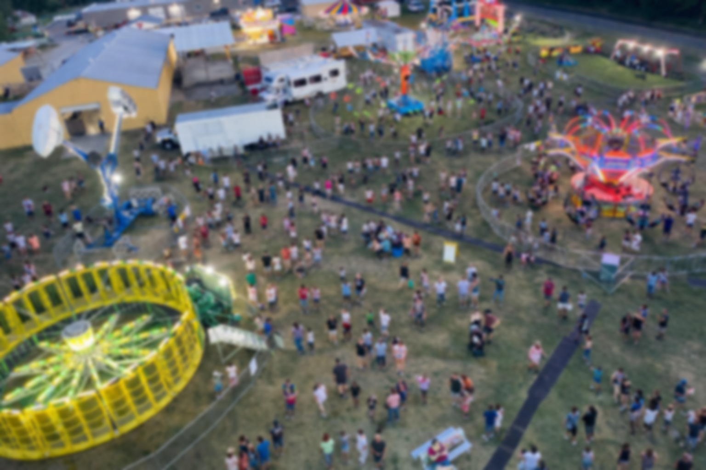
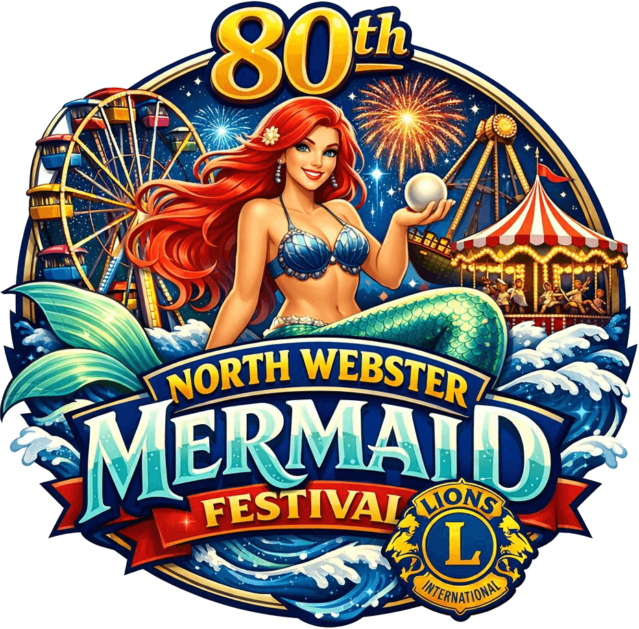
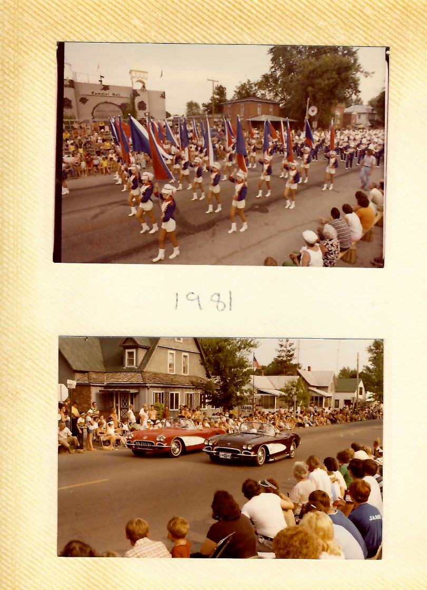

June 17–20, 2026 • North Webster, Indiana
Join us for the 80th Annual celebration of community, fun, and tradition.
Free Admission • Free Parking

80 years of bringing the North Webster community together for food, fun, and unforgettable memories.
Pageants, parades, contests, live entertainment, and activities for all ages throughout the festival.
View Events →All festival parking is free! Park on the street or in the nearby North Webster Community Church lot.
Get Directions →From classic festival fare to local favorites, satisfy every craving with our amazing food vendors.
See What's Cooking →Hosted by the North Webster Lions Club, every dollar supports our local community programs.
About Lions Club →Since 1946, the North Webster Mermaid Festival has been a cornerstone of summer in Kosciusko County. What started as a small community gathering has grown into one of Indiana's most beloved annual festivals.
Hosted by the North Webster Lions Club, the festival brings together families, friends, and visitors for a week filled with pageants, parades, live music, delicious food, and community spirit that makes North Webster truly special.
About the Lions Club
Downtown North Webster, Indiana, right along the shores of Webster Lake.
Address: 410 W. Washington St, North Webster, IN 46555